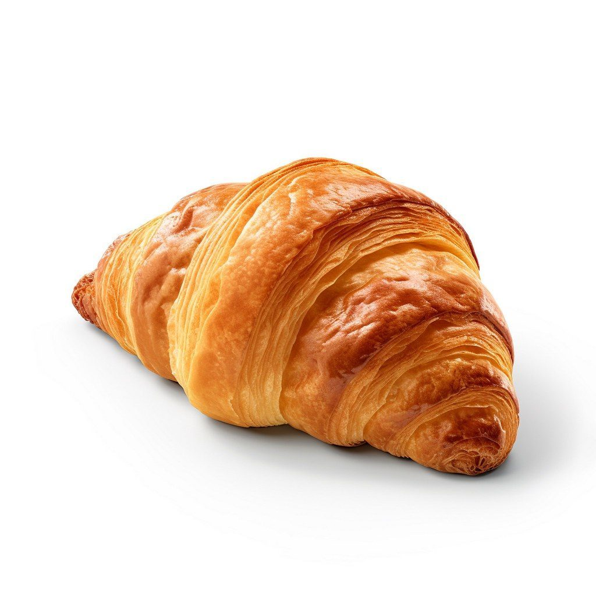
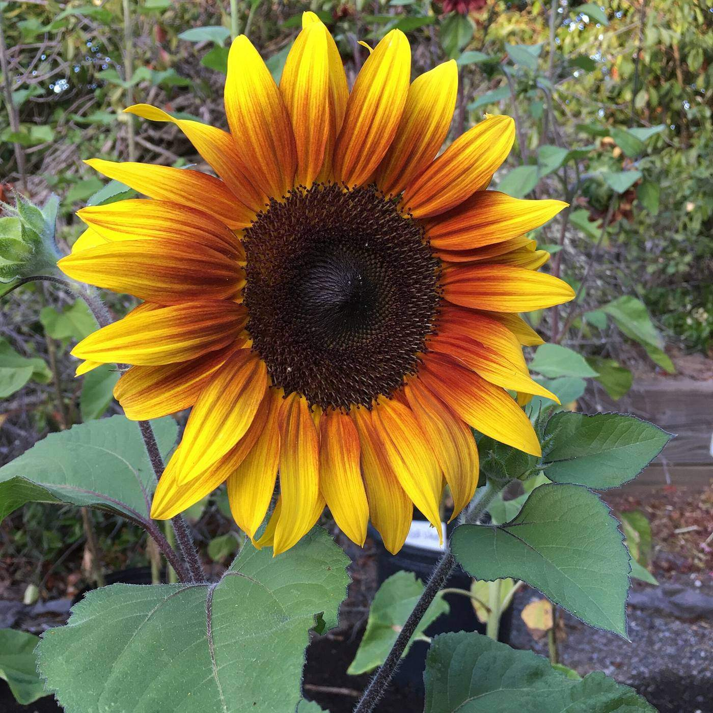
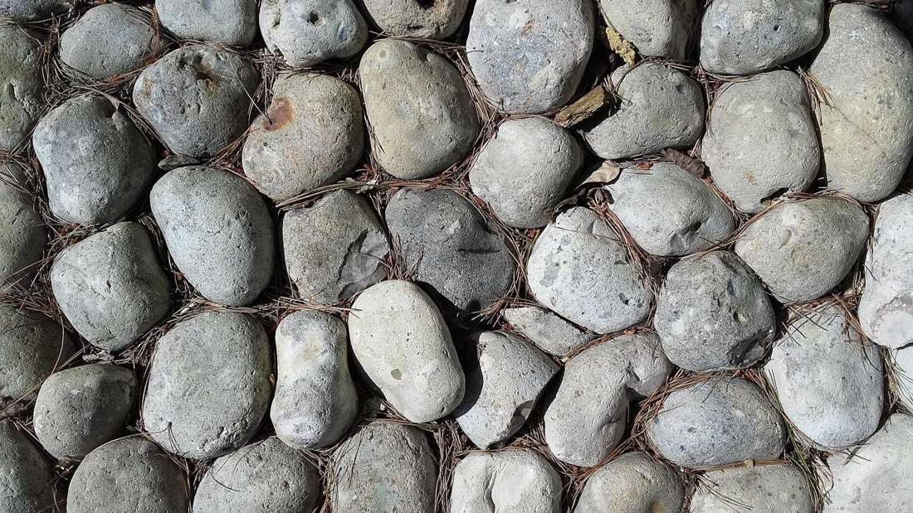

制作側の連想
ペットボトルの水ロケットを、配置図にしてみる
水ロケットの部位を図にしたもので、制作側の連想です。お店の理念・由来とは無関係で、実在の製品や工作の仕様を示すものでもありません。六つの部位に番号をふり、上の図と並べています。
凡例
六つの部位
- 1ノーズコーン先端にとりつける円すい形の部品。軽い素材で作られることが多く、ロケットの頭の形をつくる。
- 2ボトル胴炭酸飲料用の丸いボトルを使った、ロケット本体の部分。中に水を入れる。
- 3フィン(尾翼)胴の後ろ側にとりつける羽根で、三枚ほどつける形が多い。まっすぐ進むように姿勢を整える。
- 4ノズルボトルの口にあたる細い部分。中の水がここから外へ出ていく。
- 5ゴム栓ボトルの口にはめこむ栓。出番になるまで、水をボトルの中にとどめておく。
- 6発射台ロケットを立てて支える土台と、栓を受ける細い筒。地面に置いて向きを決める。
写真(イメージ)
写真(イメージ)



写真はイメージです。お店のものではありません。